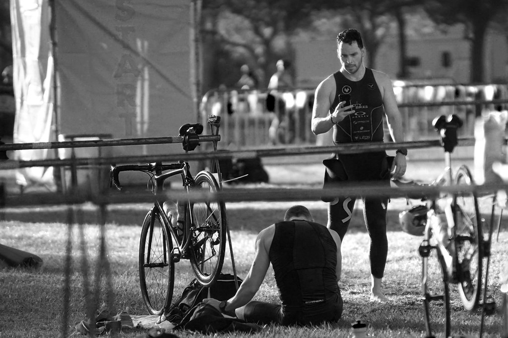

T2
-
Zmiana z jazdy na rowerze na bieg w triathlonie, zwana strefą przejściową T2, stanowi kluczowy moment, gdzie uczestnicy przechodzą z drugiej na trzecią dyscyplinę zawodów. Po intensywnej jeździe na rowerze, triathloniści wracają do strefy przejściowej, gdzie pozostawiają rower i szykują się do biegu. W tej fazie zawodnicy muszą błyskawicznie zdjąć kask i inny sprzęt rowerowy. Skoordynowanie tych działań jest kluczowe, ponieważ każda stracona sekunda w strefie przejściowej wpływa na łączny czas zawodnika. Sprawna zmiana z roweru na bieg to kluczowy element strategii zawodnika w triathlonie, mający wpływ zarówno na komfort biegu, jak i ogólny wynik zawodów.
- 